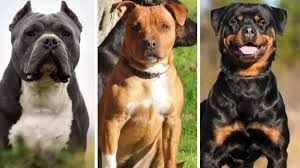
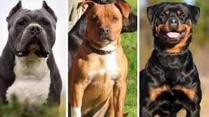

Es importante para nosotros que nuestros clientes entiendan que cada mascota es única y especial, independientemente de la raza o no, es fundamental conocer y reconocer sus necesidades. Hay animales que son más grandes que otros (con un peso mayor a 30kg), lo que requiere de cierta atención médica a más temprana edad como por ejemplo a nivel ostearticular y osteomuscular, para evitar futuras lesiones. Por otro lado, existen mascotas que son tamaño pequeño (un con peso menor a 15kg) que no necesitan de gran espacio para su confort, como tampoco atención médica en determinadas especialidades a temprana edad. Por último, los perros que tienen el pelo largo requieren de un mayor cuidado a nivel estético para evitar que su pelo se anude. Se mencionan sólo algunas de las grandes diferencias que existen entre ellos. A continuación encontrarán algunas imágenes que diferencian ciertas razas y tamaños para comprender un poco más las necesidades de cada uno.
Raza
 



Peluquería
Como mencionamos anteriormente, no todas nuestras mascotas necesitan los mismos cuidados, por lo cual requieren atenciones específicas o más a menudo que otros. Los perros de pelo largo o los que viven dentro del hogar, deberían asistir a la peluqueria con mayor frecuencia, ya que de esa manera se mantienen higiénicos, como también más saludables.